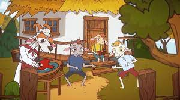

– Hai! deschideţi cu fuga, dragii mamei, cu fuga!
– Ia! Băieţi, zise cel mai mare, săriţi şi deschideţi uşa, că vine mama cu demâncare.
– Săracuţul de mine! zise cel mic. Să nu cumva să faceţi pozna să deschideţi, că-i vai de noi! Asta nu-i mămuca. Eu o cunosc de pe glas; glasul ei nu-i aşa de gros şi de răguşit, că-i mai subţire şi mai frumos!
Lupul, auzind aceste, se duse la un ferar şi puse să-i ascute limba şi dinţii, pentru a-şi subţia glasul, ş-apoi, întorcându-se, începu iar:
Trei iezi cucuieţi
Uşa mamei descuieţi!
– Ei, vedeţi, zise iarăşi cel mare; dacă mă potrivesc eu vouă? Nu-i mămuca, nu-i mămuca!
D-apoi cine-i dacă nu-i ea? Că doar şi eu am urechi! Mă duc să-i deschid.
– Bădică! bădică! zise iarăşi cel mic. Ascultaţi-mă şi pe mine! Poate mai de-apoi a veni cineva ş-a zice:
Deschideţi uşa,
Că vine mătuşa!
ş-atunci voi trebuie numaidecât să deschideţi? D-apoi nu ştiţi că mătuşa-i moartă de când lupii albi şi s-a făcut oale şi ulcioare, sărmana?
– Apoi, da! nu spun eu bine? zise cel mare. Ia, de-atunci e rău în lume, de când a ajuns coada să fie cap… Dacă te-i potrivi tu acestora, îi ţine mult şi bine pe mămuca afară. Eu, unul, mă duc să deschid.
Atunci mezinul se vâră iute în horn şi, sprijinit cu picioarele de prichiciu şi cu nasul de funingine, tace ca peştele şi tremură ca varga de frică. Dar frica-i din raiu, sărmana! Asemene cel mijlociu, tuştiu! iute sub un cherşin; se-nghemuieşte acolo cum poate, tace ca pământul şi-i tremură carnea pe dânsul de frică: Fuga-i ruşinoasă, da-i sănătoasă!
Însă cel mare se dă după uşă şi: să tragă, să nu tragă? în sfârşit, trage zăvorul… Când iaca! ce să vadă? ş-apoi mai are când vede? căci lupului îi scăpărau ochii şi-i sfârâia gâtlejul de flămând ce era. Şi, nici una, nici două, haţ! pe ied de gât, îi răteză capul pe loc şi-l mănâncă aşa de iute şi cu atâta poftă, de-ţi părea că nici pe-o măsea nu are ce pune. Apoi se linge frumuşel pe bot şi începe a se învârti prin casă cu neastâmpăr, zicând:
– Nu ştiu, părerea m-a amăgit, ori am auzit mai multe glasuri? Dar ce Dumnezeu?! Parc-au intrat în pământ… Unde să fie? Se iţeşte el pe colo, se iţeşte pe dincolo, dar pace bună! iezii nu-s nicăiri!
– Mă! că mare minune-i asta! dar nici acasă n-am de coasă… ia să mai odihnesc oleaca aste bătrâneţe!
Apoi se îndoaie de şele cam cu greu, şi se pune pe cherşin. şi când s-a pus pe cherşin, nu ştiu cum s-au făcut, că ori cherşinul a crăpat, ori cumătrul a strănutat…
Atunci iedul de sub cherşin, să nu tacă?, Îl păştea păcatul şi-l mânca spinarea, sărăcuţul!
– Să-ţi fie de bine, nănaşule!
– A! ghidi! ghidi! ghiduşi ce eşti! Aici mi-ai fost? Ia vină-ncoace la nănăşelul, să te pupe el! Apoi ridică cherşinul binişor, înşfăcă iedul de urechi şi-l flocăieşte şi-l jumuleşte şi pe-acela de-i merg petecele! Vorba ceea: "Că toată paserea pe limba ei piere".
Pe urmă se mai învârte prin casă, doar a mai găsi ceva, dar nu găseşte nimic, căci iedul cel cuminte tăcea molcum în horn, cum tace peştele în borş la foc. Dacă vede lupul şi vede că nu mai găseşte nimic, îşi pune în gând una: aşază cele două capete cu dinţii rânjiţi în fereşti, de ţi se părea că râdeau; pe urmă unge toţi păreţii cu sânge, ca să facă şi mai mult în ciuda caprei, ş-apoi iese şi-şi caută de drum. Cum a ieşit duşmanul din casă, iedul cel mic se dă iute jos din horn şi încuie uşa bine. Apoi începe a se scărmăna de cap şi a plânge cu amar după frăţiorii săi.
– Drăguţii mei frăţiori! De nu s-ar fi înduplecat, lupul nu i-ar fi mâncat! şi biata mamă nu ştie de astă mare urgie ce-a venit pe capul ei!
Şi boceşte el şi boceşte până îl apucă leşin! Dar ce era să le facă? Vina nu era a lui, ce au căutat pe nas le-a dat.
Când jălea el aşa, iacă şi capra venea cât putea, încărcată cu de-a mâncării şi gâfuind. Şi cum venea, cât de colo vede cele două capete, cu dinţii rânjind, în fereşti.
– Dragii mămucuţei, dragi! Cum aşteaptă ei cu bucurie şi-mi râd înainte când mă văd!
Băieţii mamei, băieţi,
Frumuşei şi cucuieţi!
Bucuria caprei nu era proastă. Dar când s-apropie bine, ce să vadă? Un fior rece ca gheaţa îi trece prin vine, picioarele i se taie, un tremur o cuprinde în tot trupul, şi ochii i se păinjinesc. şi ce era nu era a bine! Ea însă tot merge pân’ la uşă, cum poate, crezând că părerea o înşală… şi cum ajunge, şi începe:

Trei iezi cucuieţi
Uşa mamei descuieţi!
Că mama v-aduce vouă:
Frunze-n buze,
Lapte-n ţâţe,
Drob de sare
În spinare,
Mălăieş
În călcăieş
Smoc de flori
Pe subsuori.